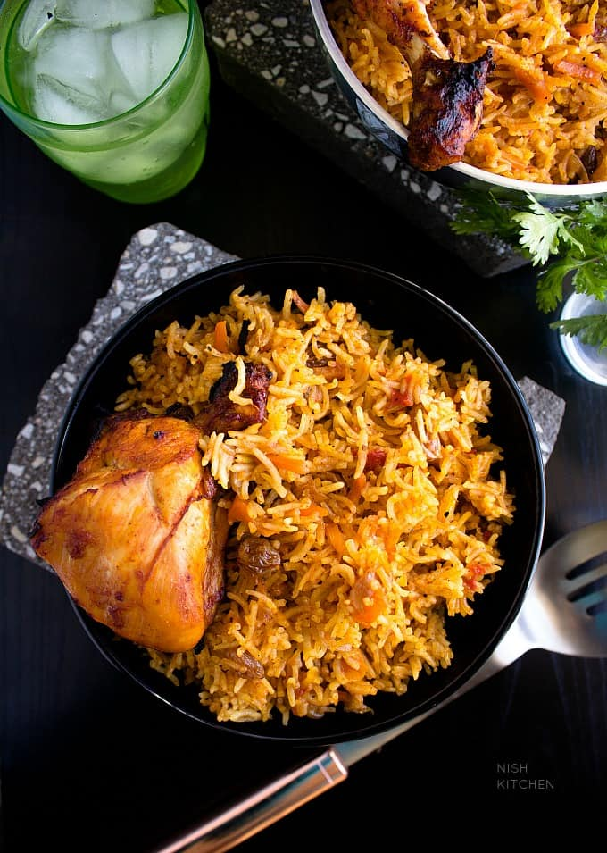

Arabian Chicken Kabsa
Recipe By: Hamzah

Kabsa is made of chicken that is slowly simmered in a spicy broth of tomatoes and spices. This chicken is then removed and either fried or grilled while the broth is used to cook the rice.
The result is a mouth-watering aromatic dish which smells lemony and spicy. The rice absorbs the juices from the chicken and vegetables and is moist. The chicken is cooked till just tenderness and then steamed with the rice so it is all in one with the rice when you serve it out.
This is a kind of dish that you can make when you want something special. It tastes great when it is steaming hot and usually you will find it served at most Saudi occassions. It is like the Arab version of Biryani and much similar to Mandi, a Yemeni mutton dish. Mandi is made in a vessel that is half buried like an earthen oven in the ground. Kabsa is made on a stove in the kitchen.
- INGREDIENTS
- 1 chicken with skin, cut into 4-8 pieces.
- 3 cups rice
- 2 onions finely chopped
- 2 tomatoes blended with skin.
- 1 tsp of tomato paste.
- 1 tsp garlic paste.
- 1 tsp ginger paste.
- 1 grated medium sized carrot.
- 1 tsp of coriander powder.
- 1/2 tsp of cumin powder.
- 1/2 tsp garam masala.
- 2 cinnamon sticks
- 3 cardamom pods (optional)
- 5 cloves
- 1/4 tsp black pepper powder.
- 1/2 tsp of red chilli powder(or to taste).
- half a lemon cut in thick slices.
- a cup of oil.
- 4 cups of water (+additional).
- TIME
- PREP TIME
- 10 min
- COOKING TIME
- 1 houors
- READY IN
- 1 Hours and ~ 30 minutes
- PREPARATIONS
- You will need to use a large pot that can accommodate the chicken pieces well.
- You will need to chop onions and all the vegetables until we need to add them.
- Wash and soak the rice.
- COOKING INSTRUCTIONS
- Start by heating the oil in the pan. Add the whole spices (cinnamon, cardamom, black pepper and cloves) and let them splutter before you add the onions.
- Fry the onions on medium high till they are golden.
- Add the ginger and garlic paste and fry a little before you add the tomatoes, tomato paste and the powdered spices. Keep stirring and fry till the tomatoes are all mushy and the oil starts to separate.
- Add the chicken pieces and some salt.
- Saute the chicken on high heat till the oil separates again.
- Add 4 cups of water and reduce heat when it starts to simmer.
- Reduce heat and let this cook till the chicken pieces are tender.
- Usually it takes about 15-20 minutes on medium low heat.
- Once the chicken is done, with a slotted spoon remove the chicken pieces on to a dish and cover with foil.
- Measure the broth. For every cup of rice that you are using, you will need one and a half cup of water. If the broth is not enough then you can add some water to make it equal to what you need.
- Start the heat again. Add the grated carrots and sliced lemon to the broth.
- When the water starts to boil, add the drained rice to it. Check and adjust the salt.
- Let it cook on medium high till the water reduces and it becomes difficult to stir. If you want the chicken in the rice then now is the time to add them.
- Remove the skin first and then drop them in to the rice and stir it.
- Close the lid tighly, reduce the heat to the lowest and let it steam for 15-20 minutes.
- If you are not adding the chicken to the rice but would like it grilled or fried then you can proceed to steaming without the chicken.
- To grill the chicken, just brush it will oil and place it in the oven for 5- 10 minutes. You can fry it hot oil too to get a golden crispy texture to it too.
- Once the rice is cooked, slowly tilt the lid slightly to let the steam escape. (Be careful the steam will escape fast!)
- After the steam escapes, serve the rice with the chicken.
- You can serve it as it is with a fresh salad or with a bowl of hot fresh tomato sauce (tomato and green chillies blended). Enjoy!
- REFERENCES
- https://marocmama.com/saudi-arabian-kabsa-chicken-and-rice